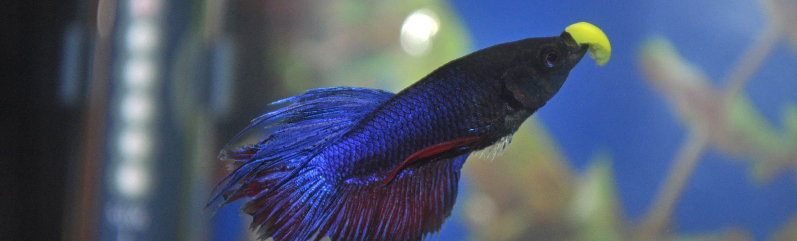

Begin by selecting high-quality Betta-specific pellets or flakes. Portion control is essential; feed your Betta small amounts 2-3 times daily to avoid overfeeding. Occasionally, diversify their diet with live or frozen foods like brine shrimp or daphnia. Stick to a consistent feeding schedule, removing uneaten food promptly to maintain water quality.
